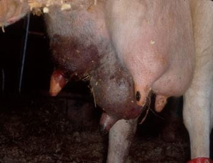

mastitis

Mastitis is caused by alarge cohort of microorganism species.
It is caused by bacterial organisms called staphylococcus aureus,pasteurella multocida.
Treatment for mastitis
Using intramammary or systematic antibiotics.
The antibiotics include;penicilin G,erythromycin(macrolides).